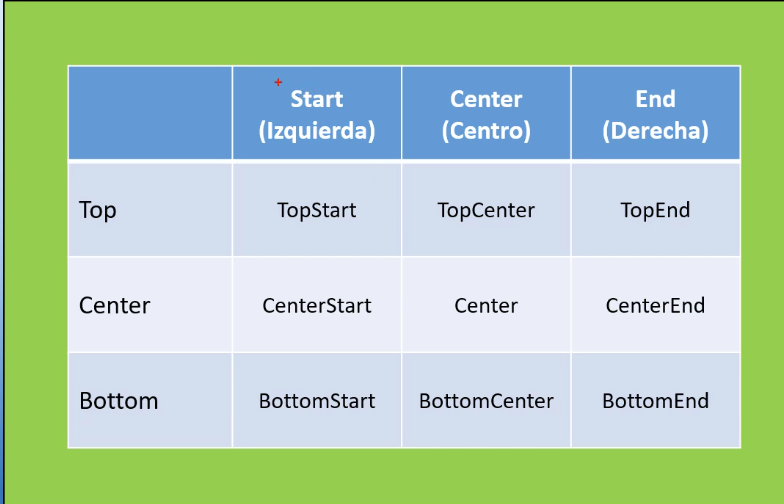

Curso de Android con Kotlin
Indice Tematico
⏫
Pedrive Areglado
El pendrive que en la casa me lo reconocia como solo lectura se arreglo,
utilizando diskpart desde la barra de comnado:
pasos seguidos:
- Conecta el pendrive a tu portátil.
- Presiona Windows + R, escribe cmd y presiona Enter para abrir la línea de comandos.
- En la línea de comandos, escribe diskpart y presiona Enter.
- Escribe list disk para ver una lista de los discos conectados.
- Identifica tu pendrive en la lista (por el tamaño), luego escribe select disk X, donde X es
el número del pendrive.
- Escribe attributes disk clear readonly y presiona Enter para eliminar el atributo de solo
lectura.
- Finalmente, escribe exit para salir de Diskpart.
⏫
notebooklm Google
Esta herramientas permite a partir de un texto genera una conversacion en ingles con inteligencia artificial.
https://notebooklm.google/
en este video te explica como usar la aplicacion explicacion
⏫
Referencias
Existen un curso de Android
AristiDev
Tambien hay otro curso en ingles AmigosCode
hay un curso de Kotlin Curso certificado
gratis
para activar el uso del zoom hay que escoger file - setting - Editor - General y luego activamos
Change font size with Ctrol+ Mouse
repositorio de Github donde encontramos ejemplose Repositorio
Eventos en Kotlin Eventos
para formatear el codigo en Android estudio, se ecoge menu Code Reformat File
link github: codigo del curso de ejemplo
Nota
curso completo de android Curso Android por Gabi Moreno
si presioname Crl + Alt + L , Android Visual Studio nos formatea el codigo
curso de JetPack Compose Jetpack por AristiDev
pagina oficial de documentacion de JetPack Compose Documentacion oficial
curso Android Ant Android Ant
rest API utilizada de ejemplo en el curso rest api ejemplo
la url seria: metodo Get
Jet Pack Compose Jet Pack por Dino Code
curso android nivel intermedio Android intermedio
ViewModel viewModel
por jotaDev
navegacion con jetpack componse tutorial oficial
course jetpack componse in enblish Jetpack freecodeCamp
curso de
kotlin in English by Philips
blog para trabajar con retrofit retrofit
viewModel por Henki viewModel Henki
roadtmap para aprender kotlin Roadmap by Martin Kipers
navegacion con jetpack componse la forma correcta Navegacion correcta por Aristidev
curso copleto de jetpack compose Jetpack componse por juan galdo
sealed class vs data class Data class vs sealed class por aristiDev
Nav3 Nav3
DevExper
Nav3 video nuevo Nav3 Programacion inicial
kotlin pildoras kotlin pildoras informaticas
crear app con base de datos local y remota app con room completa por Ant
ROOM ROOM por
Cirilus
ROOM resumido ROOM
resumido por carlos Ktx
ROOM por gabi ROOM
gabi moreno
ROOM por aristidev ROOM + Hilt + corrutinas por Aristidev
curso completo de MVVM ROOM + Capas + Hilt
en esta pagina podemos ver los paquetes y versiones utilizadas en android maven google.com
login Login
programacion inicial
tutorial completo de una app completa usando bd firebase app completa con firebase
SDD vs TDD vs BDD lo que realmentes se necesita SDD concepto aplicado
ejemplo de aplicacion completa ejemplo Android knowledge
supaBase Supabase
supaBase o Neon supabase o Neon
conectar a Neon Backend de Spring boot Neon por CarlosDev
la opcion mas recomendada es Render + Neon
spring boot backEnd completo BackEnd por CarlosDev
curso jetpack compose jetpack compose por Dino Code
curso oficial para aprender jetpack compose codelab
curso oficial2 para aprende jetpack compose open jetpack compose
10 app hechas con jetpack componse 10 app jetpack compose
curso de jetpack compose in english Jetpack Compose by Philips
app financial video video paso a paso por UILover
tuturial de jetpack compose in english Master Code
segmentacion en excel excel
remplazo del buscarV en excel remplzao del buscarV
buscarX en excel 2021 excel 2021
DashBoard en excel DashBoard en excel
panel DashBoard en excel Panel DashBoard
DashBoard en excel con IA DashBoard Gemini
⏫
Instalacion Inicial
podemos trabajar con Android Studio o Inteligg J.
tambien podemos ir codificando en Kotlin de manera on line https://play.kotlinlang.org
⏫
ejecutar en el celular
podemos probar conectando el celular por USB
✅ 1. Activar modo desarrollador en tu celular
En tu teléfono Android:
Ve a Ajustes → Acerca del teléfono
Busca Número de compilación
Toca 7 veces hasta que diga “Ahora eres desarrollador”
✅ 2. Activar depuración USB
Luego:
Ve a Ajustes → Opciones de desarrollador
Activa:
✅ Depuración USB
(Opcional pero recomendado) Instalar vía USB
✅ 3. Conectar el celular al PC
Conecta el cable USB
En el celular selecciona:
Modo transferencia de archivos (MTP)
👉 IMPORTANTE:
Te aparecerá un mensaje:
“¿Permitir depuración USB?”
✔ Dale Permitir
✔ Marca “Confiar siempre en este computador”
Habiliar vista desde el PC usando el celular conectado
✅ OPCIÓN 1: Screen Mirroring desde Android Studio (LA MEJOR 🔥)
Android Studio ya trae esto integrado:
Pasos:
Conecta tu celular por USB
Abre Android Studio
Ve a:
View → Tool Windows → Running Devices
Selecciona tu dispositivo
Activa “Mirror device” o “Screen Mirroring”
👉 Resultado:
Ves la pantalla del celular en el PC
Puedes hacer clic con el mouse
Puedes escribir desde el teclado
⏫
Variables en Kotlin
crearemos un archivo Variables.kt, y debe tener una funcion de main() como se muestra a
continuacion:
fun main(){
println("Bienvenido a Kotlin")
}
La sintaxis para las variable son :
Nombre_variable : tipo_variable, ejemplo: = contenido_variable
fun main(){
var name:String="Rodney"
var age:Int =49
var cost:Long=2500
var total:Float=1500000.23f
var salary:Double=5000.25
println("Bienvenido a Kotlin ${name}, edad= ${age} , costo unitario ${cost} , total ${total} y un salario de ${salary}")
}
el archivo completo quedó así:
package com.example.androidmaster
fun createOrden(cliente:String, equipo:String):String{
return "cliente: $cliente y equipo= $equipo";
}
fun main(){
val pi:Double =13.1416 ;
//muestra error pi=3.14 ;
var name:String ="rodney";
name="cecilia";
var age:Int = 51 ;
var salary:Long = 2540000
var interes:Float = 25.23f ;
var numero:Double = 30.5647978
var isActive:Boolean = true ;
var telefono:String? =null;
//operador Elvis
val numeroSeguro = telefono ?: "sin numero";
println("usuario es $name edad $age interes $interes salary $salary numero $numero activo $isActive numero seguro $numeroSeguro" );
val resultado:String = createOrden("rodney","Computador PC") ;
println(resultado);
}
Nota:
para que se ejectute desde la terminal hay que ejecutarlo dentro del codigo en el simbolo del triangulo.
⏫
@volatiles en Kotlin
@Volatile en Kotlin se usa para indicar que una variable puede ser accedida y modificada por múltiples hilos (threads) al mismo tiempo,
y que los cambios deben ser visibles inmediatamente para todos los hilos.
ejemplo
@Volatile
private var INSTANCE: AppDatabase? = null
⏫
Surface
Surface, Es un contenedor visual Material
Maneja estilos y fondo
Vive dentro de Compose
ejemplo
setContent {
AppTheme {
Surface(
modifier = Modifier.fillMaxSize(),
color = MaterialTheme.colorScheme.background
) {
Scaffold(
topBar = {
TopAppBar(
title = { Text("Inicio") }
)
}
) { padding ->
HomeScreen(
modifier = Modifier.padding(padding)
)
}
}
}
}
ejemplo de Bienvenida
class MainActivity : ComponentActivity() {
override fun onCreate(savedInstanceState: Bundle?) {
super.onCreate(savedInstanceState)
enableEdgeToEdge()
setContent {
CursoComposeTheme {
//GetScaffold()
GetSurface()
}
}
}
}
@Composable
fun GetSurface() {
Surface(
modifier = Modifier
.fillMaxSize()
.padding(vertical = 50.dp),
color = MaterialTheme.colorScheme.background
) {
Column(
modifier = Modifier
.fillMaxSize(),
verticalArrangement = Arrangement.Center,
//horizontalAlignment = Alignment.CenterHorizontally
) {
Text(
text = "Happy Birday Sam",
fontSize = 100.sp,
lineHeight = 116.sp,
textAlign = TextAlign.Center
)
Text(
text = "from Rodney",
fontSize = 36.sp,
modifier = Modifier
.align(alignment = Alignment.End)
)
}
}
}
⏫
clases
En Android casi todo el código gira alrededor de modelos de datos.
Esto es muy parecido a lo que ya haces en backend con DTOs o entidades en Spring Boot, .NET o NestJS.
package com.example.androidmaster
class Cliente(
var name:String ="",
var lastName:String =""
)
fun main(){
val cliente=Cliente(
name="rondey",
lastName = "zapata"
)
println(cliente.name);
}
es mas comun usar modelos de datos
package com.example.androidmaster
data class Cliente2(
val name:String ="",
val lastName:String =""
)
fun main(){
val cliente = Cliente2(
name = "rodney",
lastName = "zapata"
)
println(cliente);
}
⏫
When en Kotlin
codigo de ejemplo whens.kt
package com.example.androidmaster
fun main(){
days()
notas()
}
fun notas() {
val nota=80
val resultado=when(nota){
in 90..100 -> "excelente"
in 80..89 -> "bueno"
in 70..79 -> "aceptable"
in 60 ..69-> "regular"
else -> "reprobado"
}
println(resultado);
}
fun days(){
val day=10
when (day){
1 -> println("lunes")
2 -> println("martes")
3 -> println("miercoles")
4 -> println("jueves")
5 -> println("viernes")
6, 7 -> println("fin de semana")
else -> println("dia errado")
}
}
⏫
data class
los data-class son como los DTO que usamos en spring boot, mostramos un ejemplo con clases y data class
package com.example.androidmaster
data class Usuario(
val id: Int,
val name: String,
val lastName: String
)
class UsuarioService {
fun crearUsuario(usuario: Usuario) {
println("creando usuario ${usuario.name}")
}
}
fun main(){
val usuario= Usuario(1,"rodney","zapata")
val service =UsuarioService()
service.crearUsuario(usuario)
}
Nota:
las clases Usuario y UsuarioService lo creamos archivos separados
en nuestro ejemplos vamos a llamar a la REST API https://api.restful-api.dev/objects que nos muestra el siguinte
JSON
[
{
id: "1",
name: "Google Pixel 6 Pro",
data: {
color: "Cloudy White",
capacity: "128 GB"
}
},
{
id: "2",
name: "Apple iPhone 12 Mini, 256GB, Blue",
data: null
}
]
observamos que es una objeto JSON que dentro tiene otro subojeto llamado Data, por tal motivo tenemos que crear lo
mismo en kotlin
la estructura principal le llamaremos Device.kt
package com.example.device
data class Device(
val id:Long ,
val name: String,
val data: Specs?
)
y el objeto interno le llamaremo Specs
package com.example.device
data class Specs(
val color: String?,
val capacity: String?
)
⏫
data object
Introducido en Kotlin 1.9, un data object es un Singleton (solo existe una instancia en toda la aplicación)
que además tiene un método toString() amigable.
* singleton
* solo existe una instancia
* útil para estados o eventos únicos
* mejora toString(), equals() y hashCode()
data object Loading
⏫
sealed class
En Kotlin, una sealed class es una clase especial que se usa para representar un conjunto cerrado de tipos.
Es decir, tú defines todos los posibles estados o variantes, y no pueden existir otros fuera de los que tú declaras.
ejemplo basico
sealed class UiState {
data object Loading : UiState()
data class Success(val data: List<String>) : UiState()
data class Error(val message: String) : UiState()
}
en el viewModel
class UserViewModel : ViewModel() {
private val _state = MutableStateFlow<UiState>(UiState.Loading)
val state: StateFlow<UiState> = _state
fun cargarUsuarios() {
viewModelScope.launch {
try {
_state.value = UiState.Loading
val data = listOf("Rodney", "Cecilia") // Simulación API
_state.value = UiState.Success(data)
} catch (e: Exception) {
_state.value = UiState.Error("Error al cargar")
}
}
}
}
🎨 En Jetpack Compose:
@Composable
fun UserScreen(viewModel: UserViewModel) {
val state = viewModel.state.collectAsState()
when (val result = state.value) {
is UiState.Loading -> Text("Cargando...")
is UiState.Success -> Text("Usuarios: ${result.data}")
is UiState.Error -> Text("Error: ${result.message}")
}
}
⏫
sealed interface
cuando usar sealed interface o sealed class
Ambos ejemplos hacen lo mismo pero el el 2026 el sealed interface es el recomendable.
Ejemplo de sealed interface
sealed interface HomeUiState {
data object Loading : HomeUiState
data class Success(val items: List) : HomeUiState
data class Error(val message: String) : HomeUiState
}
Ejemplo de sealed class
sealed class HomeUiState {
data object Loading : HomeUiState()
data class Success(val items: List) : HomeUiState()
data class Error(val message: String ) : HomeUiState()
}
Ejemplo recomendado
pueden estar el codigo LoginViewModel.kt los data class y los eventos sin singun problema
data class LoginUiState(
val email: String = "",
val password: String = "",
val emailError: String? = null,
val passwordError: String? = null,
val isLoading: Boolean = false,
val errorMessage: String? = null
)
sealed interface LoginUiEvent {
data class EmailChanged(
val value: String
) : LoginUiEvent
data class PasswordChanged(
val value: String
) : LoginUiEvent
data object LoginClicked : LoginUiEvent
}
⏫
colecciones
En Kotlin, las colecciones se utilizan para almacenar grupos de datos. Las más usadas son:
List → lista ordenada
Set → conjunto sin elementos repetidos
Map → pares clave-valor
1. Listas
listas inmutables
fun listasInmutables() {
val tecnicos = listOf("rodney", "samuel", "cecilia", "sara")
println("==== ciclo for ===")
for (tecnico in tecnicos) {
println(tecnico)
}
println("==== ciclo for each ====")
tecnicos.forEach { e -> println(e) }
println("==== mostrar solo los tecnicos que comienzan con s ====")
val resultado = tecnicos.filter { it.startsWith('s') }
println(resultado)
}
listas mutables
val equipos = mutableListOf("aire LG", "Aire Samsung")
equipos.add("aire olimpo")
println(equipos)
2. Set
val ciudades = setOf("Bogotá", "Medellín", "Cali", "Bogotá")
println(ciudades)
3. Map
fun mapas() {
val clientes = mapOf(
1 to "empresa A",
2 to "empresa B",
3 to "empresa C"
)
println(clientes[1])
}
Ejercicio 1
en una lista inmutable con valores repetidos quitar los duplicados
fun quitarDuplicados() {
val ciudades = listOf("Barranquilla", "Bogota", "Cartagena", "Bogota")
println(ciudades)
val ciudadesUnicas = ciudades.toSet()
println(ciudadesUnicas)
}
Ejercicio 2
buscar las ciudades que comiencen con B
fun comenzarConLetraB() {
val ciudades = listOf("Barranquilla", "Bogota", "Cartagena", "Bucaramanga")
println(ciudades)
val ciudadesB = ciudades.filter { it.startsWith("B") }
println(ciudadesB)
}
Ejercicio 3
se debe recorrer un ciclo pero cuando encuentre una codicion debe salirse del ciclo
fun cicloBreak() {
val clientes = listOf("rodney", "samuel", "cecilia", "juan")
for (cliente in clientes) {
if (cliente == "cecilia") break
println(cliente)
}
}
Ejercicio 4
un array de ciudades que tiene valores duplicados, deben unificarlos y convertidos a mayusculas y que muestre los
que
comienzen con la letra B y quiero que queden ordenados.
fun unirCiudadesMayusculas() {
val ciudades = listOf("Bucaramanga", "Bogota", "Cartagena", "Barranquilla", "bogota")
println(ciudades)
val resultado = ciudades
.map { it.uppercase() }
.filter { it.startsWith("B") }
.toSet()
.sorted()
println(resultado)
}
Ejercicio 5
tengo una lista de valores y quiero crear a partir de este crear otro con el valor+Iva del 19%
fun valorConIva() {
val precios = listOf(1000, 2000, 3000)
val preciosIva = precios.map { precio -> precio * 1.19 }
println(precios)
println(preciosIva)
}
⏫
activity
nuestro codigo de MainActivity.kt seria:
class MainActivity : ComponentActivity() {
override fun onCreate(savedInstanceState: Bundle?) {
super.onCreate(savedInstanceState)
enableEdgeToEdge()
setContent {
DeviceTheme {
Scaffold(modifier = Modifier.fillMaxSize()) { innerPadding ->
MainView(
name = "Android",
modifier = Modifier.padding(innerPadding)
)
}
}
}
}
}
y en un archivo separado llamado MainScreen.kt
@Composable
fun MainView(name: String, modifier: Modifier = Modifier) {
Text(
text = "Comprar",
modifier = modifier
)
}
@Preview(showBackground = true, showSystemUi = true)
@Composable
fun MainPreview() {
DeviceTheme {
MainView("Android", Modifier.padding(top = 24.dp))
}
}
⏫
barra de Busquedas
Usa el elemento SearchBar componible para implementar barras de búsqueda. Entre los parámetros clave de este elemento componible, se incluyen los siguientes:
inputField: Define el campo de entrada de la barra de búsqueda. Por lo general, utiliza SearchBarDefaults.InputField, lo que permite personalizar lo siguiente:
query: Es el texto de la búsqueda que se mostrará en el campo de entrada.
onQueryChange: Es la función Lambda que controla los cambios en la cadena de consulta.
expanded: Es un valor booleano que indica si la barra de búsqueda se expandió para mostrar sugerencias o resultados filtrados.
onExpandedChange: Es una expresión lambda para controlar los cambios en el estado expandido del menú desplegable.
content: Es el contenido de esta barra de búsqueda para mostrar los resultados de la búsqueda debajo de inputField.
Ejemplo:
@OptIn(ExperimentalMaterial3Api::class)
@Composable
fun SimpleSearchBar(
textFieldState: TextFieldState,
onSearch: (String) -> Unit,
searchResults: List,
modifier: Modifier = Modifier
) {
// Controls expansion state of the search bar
var expanded by rememberSaveable { mutableStateOf(false) }
Box(
modifier
.fillMaxSize()
.semantics { isTraversalGroup = true }
) {
SearchBar(
modifier = Modifier
.align(Alignment.TopCenter)
.semantics { traversalIndex = 0f },
inputField = {
SearchBarDefaults.InputField(
query = textFieldState.text.toString(),
onQueryChange = { textFieldState.edit { replace(0, length, it) } },
onSearch = {
onSearch(textFieldState.text.toString())
expanded = false
},
expanded = expanded,
onExpandedChange = { expanded = it },
placeholder = { Text("Search") }
)
},
expanded = expanded,
onExpandedChange = { expanded = it },
) {
// Display search results in a scrollable column
Column(Modifier.verticalScroll(rememberScrollState())) {
searchResults.forEach { result ->
ListItem(
headlineContent = { Text(result) },
modifier = Modifier
.clickable {
textFieldState.edit { replace(0, length, result) }
expanded = false
}
.fillMaxWidth()
)
}
}
}
}
}
@Preview(showBackground = true)
@Composable
fun SimpleSearchBarPreview() {
val textFieldState = rememberTextFieldState("")
val fakeResults = listOf(
"Aire acondicionado",
"Reparación",
"Mantenimiento",
"Instalación",
"Filtro"
)
SimpleSearchBar(
textFieldState = textFieldState,
onSearch = { query ->
println("Searching: $query")
},
searchResults = fakeResults
)
}
⏫
item view
continuando con nuestro ejemplo decesitamos crear otra activity que llamaremos DeviceItem.kt
@Composable
fun DeviceItemView(device: Device) {
Row(verticalAlignment = Alignment.CenterVertically) {
Icon(
imageVector = Icons.Default.Phone,
contentDescription = null,
modifier = Modifier.padding(horizontal = 16.dp)
)
Column {
Text(text = device.name, style = Typography.headlineMedium)
Text(text = device.data?.color ?: "-", style = Typography.bodyMedium)
Text(text = device.data?.capacity ?: "-", style = Typography.bodyMedium)
HorizontalDivider()
}
}
}
@Preview(showBackground = true, showSystemUi = true)
@Composable
fun DeviceItemPreview() {
DeviceTheme() {
DeviceItemView(
device = Device(
id = 1,
name = "Nexus",
data = Specs(color = "Red", capacity = "20 GB")
)
)
}
}
⏫
text field
el text field son los typo de objetos que nos permite capturar informacion por teclado ya sea un text, password,
email, numeros, etc
@Composable
fun MainView(name: String, modifier: Modifier = Modifier) {
var name by remember { mutableStateOf("") }
Column {
Text(
text = "Comprar",
modifier = modifier
)
TextField(
value = name,
onValueChange = { nuevoName ->
name = nuevoName
},
placeholder = {
Text(text = "nombre")
},
keyboardOptions = KeyboardOptions(
keyboardType = KeyboardType.Text
)
)
}
}
@Preview(showBackground = true, showSystemUi = true)
@Composable
fun MainPreview() {
DeviceTheme {
MainView("Android", Modifier.padding(top = 24.dp))
}
}
Nota
tuve que agregar este import manual porque android studio no lo hace para que pueda funcionarr.
import androidx.compose.runtime.mutableStateOf
import androidx.compose.runtime.remember
import androidx.compose.runtime.getValue
import androidx.compose.runtime.setValue
⏫
OutLine text field
🎯 ¿Por qué OutlinedTextField es el estándar?
Porque sigue el diseño moderno de Material Design 3 (Material You):
✔ Más limpio visualmente
✔ Mejor separación entre campos
✔ Ideal para formularios largos
✔ UX más clara en móviles
👉 Es el que ves en:
Apps bancarias
Formularios empresariales
Apps tipo ERP/CRM
🧠 Regla práctica (muy importante)
👉 Usa esto como regla en 2026:
Formularios (CRUD, backend, negocio) → ✅ OutlinedTextField
Buscadores, chat, inputs rápidos → ✅ TextField
🚀 Ejemplo real recomendado
OutlinedTextField(
value = nombre,
onValueChange = { nombre = it },
label = { Text("Nombre") }
)
en nuestro caso de orden de servicio seria algo asi:
🧩 Si tienes MUCHAS preguntas (dinámico 🔥)
👉 Este es el patrón real que se usa:
LazyColumn {
items(preguntas) { pregunta ->
Column(modifier = Modifier.padding(8.dp)) {
Text(text = pregunta.texto)
OutlinedTextField(
value = pregunta.respuesta,
onValueChange = { nueva ->
pregunta.respuesta = nueva
},
modifier = Modifier.fillMaxWidth()
)
}
}
}
⏫
Los botones mas utilizados en aplicaciones modernas son:
| Acción | Botón |
| --------------- | ----------------- |
| Principal | Button |
| Secundaria | OutlinedButton |
| Poco importante | TextButton |
| Acción rápida | FAB |
| Íconos toolbar | IconButton |
| Acciones suaves | FilledTonalButton |
Ejemplo en jetpack Compose
@Composable
fun GetBotones() {
Column(
modifier = Modifier
.padding(vertical = 50.dp)
.padding(horizontal = 12.dp)
) {
Button(
onClick = {},
colors = ButtonDefaults.buttonColors(
containerColor = MaterialTheme.colorScheme.primary,
contentColor = MaterialTheme.colorScheme.onPrimary
),
) {
Text("Inicio")
}
Button(
onClick = {}
) {
Icon(Icons.Default.Person, "Persona")
Text("Personalizado")
}
OutlinedButton(onClick = {}
) {
Text("Cancelar")
}
OutlinedButton(
onClick = {},
colors = ButtonDefaults.outlinedButtonColors(
containerColor = MaterialTheme.colorScheme.background,
contentColor = MaterialTheme.colorScheme.primary
),
shape = RoundedCornerShape(15.dp),
border = BorderStroke(2.dp, MaterialTheme.colorScheme.primary),
modifier = Modifier
.shadow(4.dp, RoundedCornerShape(15.dp))
) {
Icon(
Icons.Default.Favorite, "favorito",
modifier = Modifier.size(25.dp)
)
Text("favorito")
}
TextButton(
onClick = {}
) {
Text("Olvide mi contraseña")
}
IconButton(
onClick = { }
) {
Icon(
Icons.Default.Search,
contentDescription = null,
)
}
FloatingActionButton(
onClick = {}
) {
Icon(
Icons.Default.Add, null
)
}
FilledTonalButton(
onClick = {}
) {
Text("filtrar")
}
}
}
los botones se realizan asi:
@Composable
fun Greeting(name: String, modifier: Modifier = Modifier) {
var name by remember { mutableStateOf("") }
Column() {
Text(
text = "Hello $name!",
modifier = modifier
)
TextField(
value = name,
onValueChange = { nuevoName ->
name = nuevoName
},
placeholder = {
Text(text = "nombre")
},
keyboardOptions = KeyboardOptions(
keyboardType = KeyboardType.Text
)
)
Button(
onClick = {
},
colors = ButtonDefaults.buttonColors(
containerColor = MaterialTheme.colorScheme.primary,
contentColor = MaterialTheme.colorScheme.onPrimary
),
shape = RoundedCornerShape(15.dp)
) {
Icon(Icons.Default.Person, contentDescription = "persona")
Text(
text = "boton aceptar"
)
}
}
}
@Preview(showBackground = true)
@Composable
fun GreetingPreview() {
CursoTheme {
Greeting("Android")
}
}
⏫
Imagen
Ejemplo 1
val image = painterResource(R.drawable.fondo)
Image(
painter = image,
contentDescription = null,
contentScale = ContentScale.Crop,
)
Ejemplo 2
@Composable
fun GetImagen() {
Box(
modifier = Modifier
.padding(vertical = 64.dp)
){
Image(
painter = painterResource(id = R.drawable.fondo),
contentDescription = null,
modifier = Modifier
.size(150.dp)
.clip(CircleShape)
.border(2.dp, Color.Green, CircleShape),
contentScale = ContentScale.Crop
)
}
}
⏫
recurso string
dentro de la carpeta res buscamos el archivo strings.xml
<resources>
<string name="app_name">cursoCompose</string>
<string name="happy_birthday_text">Happy Birthday Sam</string>
<string name="signature_from_text">from Rodney</string>
<string name="prueba_text">prueba de titulo</string>
</resources>
codigo de ejemplo
@Composable
fun GetString(){
val message= stringResource(R.string.happy_birthday_text)
val fromText=stringResource(R.string.signature_from_text)
Column(
modifier = Modifier
.fillMaxSize(),
verticalArrangement = Arrangement.Center,
//horizontalAlignment = Alignment.CenterHorizontally
) {
Text(
text = message,
fontSize = 100.sp,
lineHeight = 116.sp,
textAlign = TextAlign.Center
)
Text(
text = fromText,
fontSize = 36.sp,
modifier = Modifier
.align(alignment = Alignment.End)
)
}
}
⏫
Icon
ejemplo
@Composable
fun GetIcon(){
Column(
modifier = Modifier.padding(vertical = 64.dp)
) {
Icon(
imageVector = Icons.Default.Home,
contentDescription = "Home",
modifier = Modifier
.size(35.dp),
tint= MaterialTheme.colorScheme.primary
)
}
}
⏫
spacer
es nuy utilizado para dar espacios entre objetos
ejemplo 1 separamos verticalmente y horizontalmente
@Composable
fun GetSpacer(
) {
Column(
modifier = Modifier.padding(vertical = 64.dp)
) {
Text(
text = "texto 1"
)
Spacer(modifier = Modifier.height(16.dp))
Text(
text = "texto 2"
)
}
Row(
modifier = Modifier.padding(vertical = 132.dp)
) {
Text(
text = "columna 1"
)
Spacer(Modifier.width(45.dp))
Text(
text = "columna 2"
)
}
}
⏫
column
En Jetpack Compose, Column es un contenedor (layout) que organiza los elementos verticalmente, uno debajo del otro.
Ejemplo 1
Column(
modifier = Modifier
.fillMaxSize()
.padding(top = 64.dp)
.background(Color.Gray),
horizontalAlignment = Alignment.CenterHorizontally
) {
Row(
) {
Text(text = "columna 1")
Spacer(modifier = Modifier.width(32.dp))
Text(text = "columna 2")
}
Text(
text = "texto 1"
)
Text(
text = "texto2"
)
}
⏫
box
Cuadro para ubicar los elementos dentro de un Box.

Ejemplo
@Composable
fun GetBox(){
Box(
modifier = Modifier
.fillMaxSize()
.padding(top = 64.dp)
) {
Image(
painter = painterResource(R.drawable.fondo),
contentDescription = "Imagen de fondo",
modifier = Modifier
.fillMaxSize()
.align(Alignment.Center)
)
Text(
text = "climatizacion",
color = Color.White,
modifier = Modifier.align(Alignment.Center)
)
}
}
⏫
Scaffold
En Material Design, un scaffold es una estructura fundamental que proporciona una plataforma estandarizada para
interfaces de usuario complejas.
Mantiene unidas diferentes partes de la IU, como las barras de la app y los botones de acción flotante,
lo que les da a las apps una apariencia coherente.
class MainActivity : ComponentActivity() {
override fun onCreate(savedInstanceState: Bundle?) {
super.onCreate(savedInstanceState)
enableEdgeToEdge()
setContent {
MyApplicationTheme {
scaffoldExample()
}
}
}
}
@OptIn(ExperimentalMaterial3Api::class)
@Composable
fun scaffoldExample() {
var presses by remember { mutableIntStateOf(0) }
Scaffold(
topBar = {
TopAppBar(
colors = topAppBarColors(
containerColor = MaterialTheme.colorScheme.primaryContainer,
titleContentColor = MaterialTheme.colorScheme.primary
),
title = {
Text(text = "Top Bar")
},
)
},
bottomBar = {
BottomAppBar(
containerColor = MaterialTheme.colorScheme.primaryContainer,
contentColor = MaterialTheme.colorScheme.primary
) {
Text(
text = "Botton AppBar"
)
}
},
floatingActionButton = {
FloatingActionButton(onClick = { presses++ }) {
Icon(Icons.Default.Add, contentDescription="Add")
}
}
)
{ innerPadding ->
Column(
modifier = Modifier
.padding(innerPadding),
verticalArrangement = Arrangement.spacedBy(10.dp)
) {
Text(
text = "prueba en kotlin"
)
}
}
}
@Preview(showBackground = true)
@Composable
fun scaffoldExamplePreview() {
MyApplicationTheme {
scaffoldExample()
}
}
⏫
estructura
La estrcutura recomendada en MVVM , Modelo, View, ViewModel, por lo cual los estados se manejan el el ViewModel y se
cambia:
var name by mutableStateOf("") // dentro del ViewModel ❌
Lo correcto seria:
en el viewModel
class MyViewModel : ViewModel() {
private val _name = MutableStateFlow("")
val name: StateFlow = _name
fun onNameChange(newValue: String) {
_name.value = newValue
}
}
en el Componse
val name by viewModel.name.collectAsState()
TextField(
value = name,
onValueChange = { viewModel.onNameChange(it) }
)
⏫
estados
cuando trabajamos con textField o cualquier objeto de la IU tiene que esta vinculado a un valor, el cual llamamos
estado:
por ejemplo si ento un textField que captura el nombre de una persona el codigo seria:
remenber
var nombre by remember { mutableStateOf("") }
pero este valor se pierde si giro la pantalla, para que persista al rotar la pantalla hay que usar.
rememberSaveable
var nombre by rememberSaveable { mutableStateOf("") }
estos casos se aplica cuando trabajamos con estados locales
son los valores por defecto, pero cuando trabajos con viewModel hay que configurarlo manualmente y el codigo ahora
seria:
StateFlow
class UserViewModel : ViewModel() {
private val _nombre = MutableStateFlow("")
val nombre: StateFlow<String> = _nombre
fun onNombreChange(valor: String) {
_nombre.value = valor
}
}
y para usarlo desde el viewModel desde una pantalla el codigo seria:
@Composable
fun UserScreen(viewModel: UserViewModel = viewModel()) {
val nombre by viewModel.nombre.collectAsState()
TextField(
value = nombre,
onValueChange = { viewModel.onNombreChange(it) }
)
}
⏫
viewModel
para poder trabajar con view model primero hay que configurar el proyecto agregando las siguientes dependencias:
dentro de TOML
[versions]
viewModelV = "2.10.0"
[libraries]
viewModel = { group = "androidx.lifecycle", name = "lifecycle-viewmodel-compose", version.ref = "viewModelV" }
En build.gradle.kts
dependencies {
implementation(libs.viewModel)
}
usar el viewModel en el compose
@Composable
fun LoginScreen() {
val viewModel: LoginViewModel = viewModel()
Text(text = viewModel.message)
}
Ejemplo aplicado
feature/user/
├── data/
│ ├── UserRepository.kt
│ └── UserRepositoryImpl.kt
│
├── domain/
│ └── User.kt
│
├── presentation/
│ ├── UserViewModel.kt
│ ├── UserState.kt
│ └── UserScreen.kt
1. modelo
package com.example.navegacion.domain.model
data class User(
val id: Int,
val name: String
)
2. Repository
package com.example.navegacion.data.repository
import com.example.navegacion.domain.model.User
interface UserRepository {
suspend fun getUsers(): List<User>
}
3. Implementamos el Repository
package com.example.navegacion.data.repository
import com.example.navegacion.domain.model.User
import kotlinx.coroutines.delay
class UserRepositoryImp : UserRepository {
override suspend fun getUsers(): List<User> {
delay(1000)
return listOf(
User(id = 1, name = "Rodney"),
User(id = 2, name = "cecilia"),
User(id = 3, name = "juan miguel"),
User(id = 3, name = "samuel"),
)
}
}
4. Estados
package com.example.navegacion.ui.screens.user
import com.example.navegacion.domain.model.User
data class UserUiState(
val isLoading: Boolean = false,
val users: List<User> = emptyList(),
val error: String? = null
)
5. viewModel
package com.example.navegacion.ui.screens.user
import androidx.lifecycle.ViewModel
import androidx.lifecycle.viewModelScope
import com.example.navegacion.data.repository.UserRepository
import com.example.navegacion.data.repository.UserRepositoryImpl
import kotlinx.coroutines.flow.MutableStateFlow
import kotlinx.coroutines.flow.StateFlow
import kotlinx.coroutines.launch
class UserViewModel(
private val repository: UserRepository = UserRepositoryImpl()
) : ViewModel() {
private val _state = MutableStateFlow(UserUiState())
val state: StateFlow<UserUiState> = _state
fun loadUsers() {
viewModelScope.launch {
_state.value = _state.value.copy(isLoading = true)
try {
val users = repository.getUsers()
_state.value = _state.value.copy(
isLoading = false,
users = users
)
} catch (e: Exception) {
_state.value = _state.value.copy(
isLoading = false,
error = e.message
)
}
}
}
}
6. view
package com.example.navegacion.ui.screens.user
import androidx.compose.foundation.layout.Column
import androidx.compose.foundation.layout.PaddingValues
import androidx.compose.foundation.layout.fillMaxSize
import androidx.compose.foundation.layout.padding
import androidx.compose.material3.Text
import androidx.compose.runtime.Composable
import androidx.compose.runtime.LaunchedEffect
import androidx.compose.runtime.getValue
import androidx.compose.ui.Modifier
import androidx.compose.ui.unit.dp
import androidx.lifecycle.compose.collectAsStateWithLifecycle
import androidx.lifecycle.viewmodel.compose.viewModel
@Composable
fun UserScreen(
viewModel: UserViewModel = viewModel(),
padding: PaddingValues
) {
// val state by viewModel.state.collectAsState()
val state by viewModel.state.collectAsStateWithLifecycle()
LaunchedEffect(Unit) {
viewModel.loadUsers()
}
Column(
modifier = Modifier
.fillMaxSize()
.padding(padding)
.padding(16.dp)
) {
when {
state.isLoading -> {
Text("Cargando...")
}
state.error != null -> {
Text("Error: ${state.error}")
}
else -> {
state.users.forEach {
Text(text = it.name)
}
}
}
}
}
⏫
Object
En Kotlin, object sirve para crear un único objeto en memoria (singleton)
o para declarar objetos anónimos y utilidades.
Ejemplo
object Logger {
fun info(message: String) {
println("INFO: $message")
}
fun error(message: String) {
println("ERROR: $message")
}
}
Uso
fun main() {
Logger.info("Usuario logueado")
Logger.error("Error de conexión")
}
lo podemos usar desde cualquier parte sin tener que instanciarlo, se usar cuando se necesita algo global que quiere ser compartido.
es muy utilizado en :
* Configuración
* Logger
* Cache
* SessionManager
* Constantes
* Helpers
* Validadores
* Navegación
* Estados globales
ejemplo 2 en la navegacion
object Routes {
const val HOME = "home"
const val LOGIN = "login"
const val USERS = "users"
}
uso en la navegacion
navController.navigate(Routes.HOME)
ejemplo 3 implementando interfaces
sealed interface LoginState {
object Loading : LoginState
object Success : LoginState
data class Error(
val message: String
) : LoginState
}
uso interfaces
val state: LoginState = LoginState.Loading
ejemplo 4 codnfiguracion global
object DatabaseConfig {
val url = "localhost"
}
Uso de la configuracion global
println(DatabaseConfig.url)
ejemplo 5. Sigleton con estado
object SessionManager {
var usuario: String? = null
fun login(nombre: String) {
usuario = nombre
println("Usuario $nombre ha iniciado sesión")
}
fun logout() {
println("Usuario $usuario ha cerrado sesión")
usuario = null
}
}
uso de la SessionManager
SessionManager.login("Rodney")
println(SessionManager.usuario) // Rodney
SessionManager.logout()
⏫
Optional
es cuando una variable o un resultado puede devolver nulo en kotlin a diferencia de java, cuenta con el simbolo ?.
cuando el simbolo ?: va acompañado con los dos punto se llama Elvis y es usado para el else.
ejemplo en java
Optional<User> user = repository.findById(id);
ejemplo en kotlin
val user: User? = repository.findById(id)
ejemplo del Elvis ?:
val name: String? = "Juan"
println(name ?: "Vacío")
ejemplo practico completo
data class Customer(
val name: String?,
val email: String?
)
fun main() {
val customer = Customer(
name = null,
email = "test@gmail.com"
)
val name = customer.name ?: "Cliente sin nombre"
println(name)
customer.email?.let {
println(it.uppercase())
}
}
⏫
Injeccion de Dependencia
⏫
Navigation3
En navigation3 cambian los conceptos:
Navigation 2.x
NavHost
componsable
NavController
Navigation 3
NavDisplay
NavEntry
(mas simplificado / impricito)
Cofiguracon de Dependencias
Configuracion en el TOML
[versions]
# Core
kotlin = "2.2.21"
agp = "9.1.0"
# Compose
compose-bom = "2026.04.01"
# AndroidX
core-ktx = "1.13.1"
lifecycle = "2.8.0"
activity-compose = "1.9.0"
# Navigation (experimental moderno)
navigation3 = "1.1.1"
# Room
room = "2.8.4"
# Serialization
kotlinx-serialization = "1.8.1"
# Testing
junit = "4.13.2"
androidx-junit = "1.1.5"
espresso = "3.5.1"
# KSP (alineado con Kotlin)
ksp = "2.3.6"
[libraries]
# -------------------------
# CORE
# -------------------------
androidx-core-ktx = { group = "androidx.core", name = "core-ktx", version.ref = "core-ktx" }
# -------------------------
# COMPOSE (controlado por BOM)
# -------------------------
androidx-compose-bom = { group = "androidx.compose", name = "compose-bom", version.ref = "compose-bom" }
androidx-compose-ui = { group = "androidx.compose.ui", name = "ui" }
androidx-compose-ui-graphics = { group = "androidx.compose.ui", name = "ui-graphics" }
androidx-compose-ui-tooling = { group = "androidx.compose.ui", name = "ui-tooling" }
androidx-compose-ui-preview = { group = "androidx.compose.ui", name = "ui-tooling-preview" }
androidx-compose-material3 = { group = "androidx.compose.material3", name = "material3" }
# -------------------------
# LIFECYCLE
# -------------------------
androidx-lifecycle-runtime = { group = "androidx.lifecycle", name = "lifecycle-runtime-ktx", version.ref = "lifecycle" }
androidx-lifecycle-viewmodel-compose = { group = "androidx.lifecycle", name = "lifecycle-viewmodel-compose", version.ref = "lifecycle" }
# -------------------------
# ACTIVITY
# -------------------------
androidx-activity-compose = { group = "androidx.activity", name = "activity-compose", version.ref = "activity-compose" }
# -------------------------
# NAVIGATION 3 (experimental)
# -------------------------
androidx-navigation3-runtime = { group = "androidx.navigation3", name = "navigation3-runtime", version.ref = "navigation3" }
androidx-navigation3-ui = { group = "androidx.navigation3", name = "navigation3-ui", version.ref = "navigation3" }
# -------------------------
# ROOM
# -------------------------
androidx-room-runtime = { group = "androidx.room", name = "room-runtime", version.ref = "room" }
androidx-room-ktx = { group = "androidx.room", name = "room-ktx", version.ref = "room" }
androidx-room-compiler = { group = "androidx.room", name = "room-compiler", version.ref = "room" }
# -------------------------
# SERIALIZATION
# -------------------------
kotlinx-serialization-json = { group = "org.jetbrains.kotlinx", name = "kotlinx-serialization-json", version.ref = "kotlinx-serialization" }
# -------------------------
# TESTING
# -------------------------
junit = { group = "junit", name = "junit", version.ref = "junit" }
androidx-junit = { group = "androidx.test.ext", name = "junit", version.ref = "androidx-junit" }
androidx-espresso = { group = "androidx.test.espresso", name = "espresso-core", version.ref = "espresso" }
[plugins]
android-application = { id = "com.android.application", version.ref = "agp" }
kotlin-android = { id = "org.jetbrains.kotlin.android", version.ref = "kotlin" }
kotlin-compose = { id = "org.jetbrains.kotlin.plugin.compose", version.ref = "kotlin" }
# IMPORTANTE: misma versión que Kotlin
kotlin-serialization = { id = "org.jetbrains.kotlin.plugin.serialization", version.ref = "kotlin" }
# KSP alineado con Kotlin
ksp = { id = "com.google.devtools.ksp", version.ref = "ksp" }
gradle .app
plugins {
alias(libs.plugins.android.application)
alias(libs.plugins.kotlin.compose)
// 🔥 Serialization
alias(libs.plugins.kotlin.serialization)
// 🔥 KSP (Room)
alias(libs.plugins.ksp)
}
android {
namespace = "com.example.navegacionunida"
compileSdk = 36
defaultConfig {
applicationId = "com.example.navegacionunida"
minSdk = 34
targetSdk = 36
versionCode = 1
versionName = "1.0"
testInstrumentationRunner = "androidx.test.runner.AndroidJUnitRunner"
}
buildTypes {
release {
isMinifyEnabled = false
proguardFiles(
getDefaultProguardFile("proguard-android-optimize.txt"),
"proguard-rules.pro"
)
}
}
compileOptions {
sourceCompatibility = JavaVersion.VERSION_17
targetCompatibility = JavaVersion.VERSION_17
}
buildFeatures {
compose = true
}
}
dependencies {
// -------------------------
// CORE
// -------------------------
implementation(libs.androidx.core.ktx)
// -------------------------
// COMPOSE (BOM)
// -------------------------
implementation(platform(libs.androidx.compose.bom))
implementation(libs.androidx.compose.ui)
implementation(libs.androidx.compose.ui.graphics)
implementation(libs.androidx.compose.ui.preview)
implementation(libs.androidx.compose.material3)
debugImplementation(libs.androidx.compose.ui.tooling)
// -------------------------
// LIFECYCLE
// -------------------------
implementation(libs.androidx.lifecycle.runtime)
implementation(libs.androidx.lifecycle.viewmodel.compose)
// -------------------------
// ACTIVITY
// -------------------------
implementation(libs.androidx.activity.compose)
// -------------------------
// NAVIGATION 3
// -------------------------
implementation(libs.androidx.navigation3.runtime)
implementation(libs.androidx.navigation3.ui)
// -------------------------
// ROOM
// -------------------------
implementation(libs.androidx.room.runtime)
implementation(libs.androidx.room.ktx)
ksp(libs.androidx.room.compiler)
// -------------------------
// SERIALIZATION
// -------------------------
implementation(libs.kotlinx.serialization.json)
// -------------------------
// TESTING
// -------------------------
testImplementation(libs.junit)
androidTestImplementation(libs.androidx.junit)
androidTestImplementation(libs.androidx.espresso)
// Compose testing
androidTestImplementation(platform(libs.androidx.compose.bom))
androidTestImplementation("androidx.compose.ui:ui-test-junit4")
debugImplementation("androidx.compose.ui:ui-test-manifest")
}
Navegador.kt
package com.example.navegacionunida.app.navegation.simple
import androidx.compose.material3.Text
import androidx.compose.runtime.Composable
import androidx.navigation3.runtime.NavEntry
import androidx.navigation3.runtime.NavKey
import androidx.navigation3.runtime.rememberNavBackStack
import androidx.navigation3.ui.NavDisplay
import com.example.navegacionunida.pantallas.SegundaPantalla
import com.example.navegacionunida.pantallas.inicio
import kotlinx.serialization.Serializable
@Serializable
data object Inicio: NavKey
//data class SegundaPantalla(val id: String)
@Serializable
data class SegundaPantalla(val id: String): NavKey
@Composable
fun navFuncionProveedor() {
val backStack= rememberNavBackStack(Inicio)
NavDisplay(
backStack = backStack,
onBack = { backStack.removeLastOrNull() },
entryProvider = { key ->
when (key) {
is Inicio -> NavEntry(key) {
inicio { valor ->
backStack.add(SegundaPantalla(valor))
}
}
is SegundaPantalla -> NavEntry(key) {
SegundaPantalla(key.id) {
//backStack.add(Inicio)
backStack.removeLastOrNull()
}
}
else -> NavEntry(key) {
Text("Unknown route")
}
}
}
)
}
⏫
corrutinas
Las corrutinas es la forma moderna de manejar las consultas asincronicas sin tener que usar Callback con codigo
complejo:
Codigo CallBack
fun getData(callback: (String) -> Unit) {
Thread {
Thread.sleep(2000)
callback("Datos")
}.start()
}
Codigo con corrutinas
suspend fun getData(): String {
delay(2000)
return "Datos"
}
⏫
Eventos en Kotlin
crearemos un EditText y un Button, donde el boton lo enlacaremos al evento Click.
val btnStart =findViewById<AppCompatButton>(R.id.btnStart)
val etName =findViewById<AppCompatEditText>(R.id.etName)
btnStart.setOnClickListener{
Toast.makeText(this, "¡Botón presionado! ${etName.text.toString()}", Toast.LENGTH_SHORT).show()
Log.i("aristiDev","Boton pulsado con ${etName.text.toString()}")
}
⏫
Intent en Kotlin
para llamar una Activity desde otra activity y pasarle un valor como parametro hay que usar Intent
creamos una activity llamada ResultActivity y un TextView que reciba un valor con el nombre
tvResult
<TextView
android:id="@+id/tvResult"
android:layout_width="wrap_content"
android:layout_height="match_parent"
android:textColor="@color/teal_200"
android:text="prueba de texto"
android:textSize="35sp"
app:layout_constraintBottom_toBottomOf="parent"
app:layout_constraintEnd_toEndOf="parent"
app:layout_constraintStart_toStartOf="parent"
app:layout_constraintTop_toTopOf="parent"
/>
y el codigo en ResultActivity seria:
setContentView(R.layout.activity_result)
val tvResult=findViewById(R.id.tvResult)
val name: String =intent.extras?.getString("EXTRA_NAME").orEmpty()
tvResult.text="hola ${name}"
y el codigo de la Activiy principal que llame a la secundaria :
setContentView(R.layout.activity_first_app)
val btnStart =findViewById(R.id.btnStart)
val etName =findViewById(R.id.etName)
btnStart.setOnClickListener{
val name=etName.text.toString()
if (name.isNotEmpty()){
val intent = Intent(this,ResultActivity::class.java)
intent.putExtra("EXTRA_NAME", name)
startActivity(intent)
//Toast.makeText(this, "¡Botón presionado!", Toast.LENGTH_SHORT).show()
Toast.makeText(this, "¡Botón presionado! ${etName.text.toString()}", Toast.LENGTH_SHORT).show()
Log.i("aristiDev","Boton pulsado con ${etName.text.toString()}")
}
}
⏫
room + sqlite
lo primero consiste en instalar las dependecias de room .
paso 1 agregar dependencias En build.gradle:
implementation("androidx.room:room-runtime:2.6.1")
kapt("androidx.room:room-compiler:2.6.1")
implementation("androidx.lifecycle:lifecycle-viewmodel-ktx:2.7.0")
implementation("org.jetbrains.kotlinx:kotlinx-coroutines-android:1.7.3")
Nota
a mi funciono fue lo siguiente en el gradle.toml :
[versions]
agp = "9.1.1"
coreKtx = "1.18.0"
junit = "4.13.2"
junitVersion = "1.3.0"
espressoCore = "3.7.0"
lifecycleRuntimeKtx = "2.10.0"
activityCompose = "1.13.0"
kotlin = "2.2.10"
composeBom = "2025.02.00"
room="2.8.4"
[libraries]
androidx-core-ktx = { group = "androidx.core", name = "core-ktx", version.ref = "coreKtx" }
junit = { group = "junit", name = "junit", version.ref = "junit" }
androidx-junit = { group = "androidx.test.ext", name = "junit", version.ref = "junitVersion" }
androidx-espresso-core = { group = "androidx.test.espresso", name = "espresso-core", version.ref = "espressoCore" }
androidx-lifecycle-runtime-ktx = { group = "androidx.lifecycle", name = "lifecycle-runtime-ktx", version.ref = "lifecycleRuntimeKtx" }
androidx-activity-compose = { group = "androidx.activity", name = "activity-compose", version.ref = "activityCompose" }
androidx-compose-bom = { group = "androidx.compose", name = "compose-bom", version.ref = "composeBom" }
androidx-compose-ui = { group = "androidx.compose.ui", name = "ui" }
androidx-compose-ui-graphics = { group = "androidx.compose.ui", name = "ui-graphics" }
androidx-compose-ui-tooling = { group = "androidx.compose.ui", name = "ui-tooling" }
androidx-compose-ui-tooling-preview = { group = "androidx.compose.ui", name = "ui-tooling-preview" }
androidx-compose-ui-test-manifest = { group = "androidx.compose.ui", name = "ui-test-manifest" }
androidx-compose-ui-test-junit4 = { group = "androidx.compose.ui", name = "ui-test-junit4" }
androidx-compose-material3 = { group = "androidx.compose.material3", name = "material3" }
androidx-room-runtime={group="androidx.room", name="room-runtime", version.ref="room"}
androidx-room-ktx={group="androidx.room", name="room-ktx", version.ref="room"}
androidx-room-compiler={group="androidx.room", name="room-compiler", version.ref="room"}
[plugins]
android-application = { id = "com.android.application", version.ref = "agp" }
kotlin-compose = { id = "org.jetbrains.kotlin.plugin.compose", version.ref = "kotlin" }
ksp = { id = "com.google.devtools.ksp", version = "2.3.6" }
en gradle.app
plugins {
alias(libs.plugins.android.application)
alias(libs.plugins.kotlin.compose)
alias(libs.plugins.ksp)
}
dependencies {
implementation(libs.androidx.core.ktx)
implementation(libs.androidx.lifecycle.runtime.ktx)
implementation(libs.androidx.activity.compose)
implementation(platform(libs.androidx.compose.bom))
implementation(libs.androidx.compose.ui)
implementation(libs.androidx.compose.ui.graphics)
implementation(libs.androidx.compose.ui.tooling.preview)
implementation(libs.androidx.compose.material3)
testImplementation(libs.junit)
androidTestImplementation(libs.androidx.junit)
androidTestImplementation(libs.androidx.espresso.core)
androidTestImplementation(platform(libs.androidx.compose.bom))
androidTestImplementation(libs.androidx.compose.ui.test.junit4)
debugImplementation(libs.androidx.compose.ui.tooling)
debugImplementation(libs.androidx.compose.ui.test.manifest)
implementation(libs.androidx.room.runtime)
implementation(libs.androidx.room.ktx)
//implementation(libs.androidx.room.compiler)
ksp(libs.androidx.room.compiler)
}
⏫
alerting
Es simplemente mostrar un mensaje visual para informar algo al usuario, por ejemplo:
1. Alert Dialog
AlertDialog.Builder(context)
.setTitle("Confirmación")
.setMessage("¿Deseas eliminar este registro?")
.setPositiveButton("Sí") { _, _ ->
// acción
}
.setNegativeButton("No", null)
.show()
2. 🍞 Toast (mensaje rápido)
Toast.makeText(context, "Guardado correctamente", Toast.LENGTH_SHORT).show()
3. 📌 Snackbar (más moderno)
Snackbar.make(view, "Registro eliminado", Snackbar.LENGTH_LONG)
.setAction("Deshacer") {
// acción
}
.show()
4. 🧠 En Jetpack Compose (moderno 2026)
if (showDialog) {
AlertDialog(
onDismissRequest = { showDialog = false },
title = { Text("Confirmación") },
text = { Text("¿Deseas continuar?") },
confirmButton = {
Button(onClick = { /* acción */ }) {
Text("Sí")
}
},
dismissButton = {
Button(onClick = { showDialog = false }) {
Text("No")
}
}
)
}